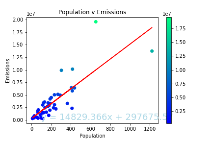
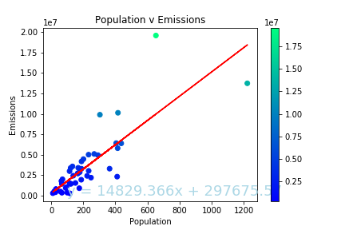
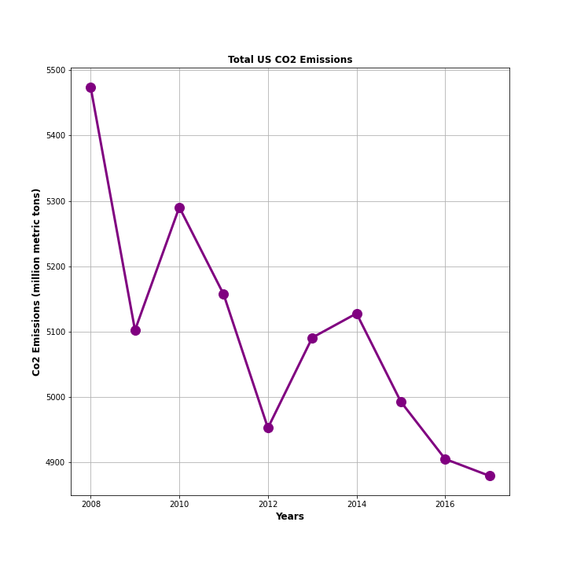
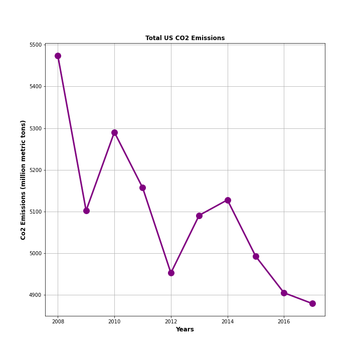

Consumption
Production
 Population
Consumption
Production
 Population
 Plot Comparison
 Our Data
Plot Comparison
 Our Data
A comparision analysis of alternative energies and how they effect air quality.
The purpose of this project is to research the effects of alternative energies on air quality. In the initial investigations our focus was on solar energy and the quantity of CO2 emmissions in the air. We expanded the focus to look at the other forms of alternative energy specifically wind and water. In addition, investigated total population versus air quality. For this project we hit 3 different APIs. From NREL we collected Emissions data. There are several types of air pollutants, but we focused on CO2. CO2 accounts for 75% of greenhouse gas emissions and is a direct result of fossil fuel combustion. Next, from the US Census Bureau’s API, we collected population data for each state Lastly, our most important resource was the Energy Information Administration API, where we collected data about energy production and consumption. Our analysis focused on the years between 2008 and 2017.